실제 만든 화면 → 표시 번호 → 코드 → 직접 실험
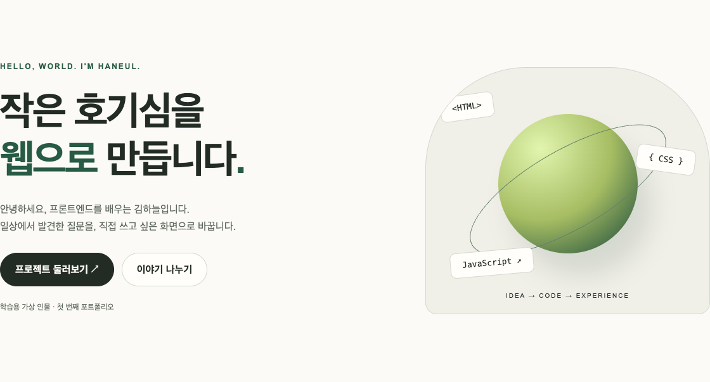
123실제 브라우저 캡처에 설명용 번호를 덧붙였습니다. 웹에는 이 번호가 표시되지 않습니다.
| 개념 / 항목 | 쉽게 이해하기 · 실제 적용 |
|---|---|
| ① 제목과 소개 | HTML의 h1, p. 내용의 의미와 읽는 순서를 결정합니다. |
| ② 프로젝트 버튼 | a href="#projects". 목적지 section의 id로 이동하고 CSS scroll-behavior가 이동을 부드럽게 합니다. |
| ③ 오른쪽 그래픽 | CSS의 background, border-radius, gradient, position으로 만든 장식입니다. 이미지를 내려받는 대신 코드로 그립니다. |
1. 현재 페이지에서 전체 연결을 봅니다.
2. 다음 페이지부터 구조·배치·테마·API·폼을 하나씩 관찰합니다.
3. 표의 파일명과 함수명을 검색해 원본 코드와 연결합니다.
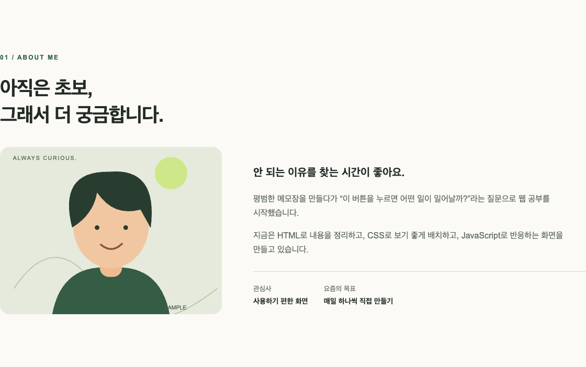
123About 영역: 프로필은 직접 제작한 SVG 일러스트이며 실제 인물 사진이 아닙니다.
| 개념 / 항목 | 쉽게 이해하기 · 실제 적용 |
|---|---|
| ① section | index.html의 section id="about". 소개 영역이라는 묶음과 메뉴가 이동할 목적지를 만듭니다. |
| ② img + alt | images/profile.svg를 표시합니다. alt는 이미지가 보이지 않거나 화면 읽기 도구를 사용할 때 뜻을 전달합니다. |
| ③ h3 + p | 소제목과 본문을 구분합니다. 글자 크기만 크게 만드는 것과 HTML의 의미를 부여하는 것은 다릅니다. |
<section id="about" class="wrap section reveal">
...
<img src="images/profile.svg"
alt="가상 인물 김하늘을 나타내는 웃는 얼굴 일러스트">
...
</section>메뉴의 href="#about"은 그대로 두고 section의 id를 다른 이름으로 바꿔보세요. 연결이 깨집니다. 두 값이 일치해야 한다는 것을 확인한 뒤 복원하세요.
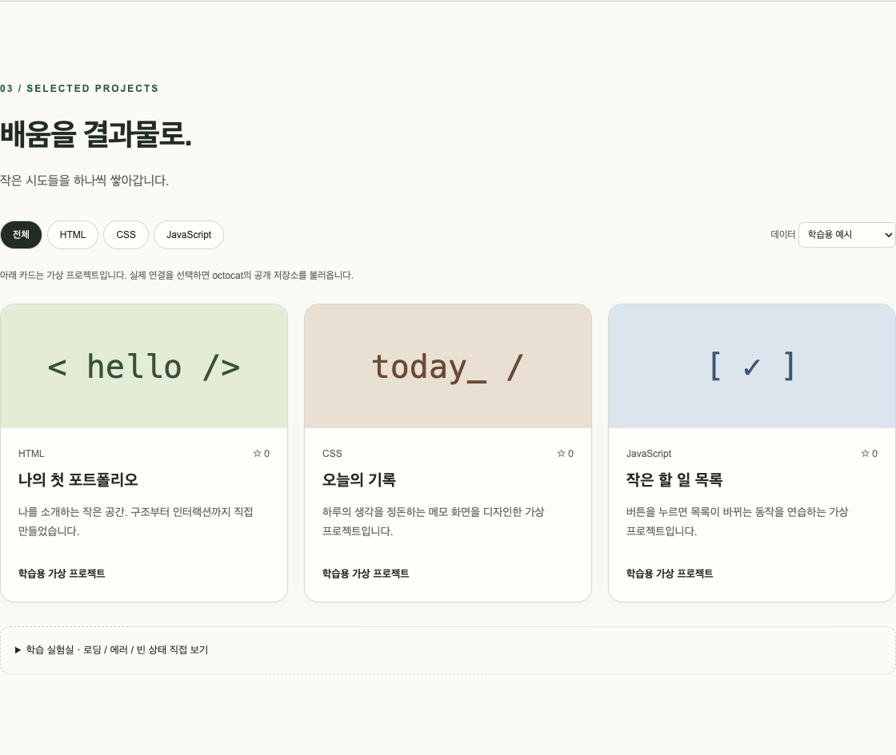
123데스크톱 Projects 영역. 메뉴/필터는 Flex, 카드 목록은 Grid로 배치했습니다.
.nav { display: flex; align-items: center; }
.project-grid {
display: grid;
grid-template-columns:
repeat(auto-fit, minmax(min(100%, 280px), 1fr));
gap: 20px;
}| 개념 / 항목 | 쉽게 이해하기 · 실제 적용 |
|---|---|
| ① 한 방향 정렬 | 필터 버튼은 Flex로 나란히 놓고 공간이 부족하면 줄바꿈합니다. 상단 nav도 Flex를 사용합니다. |
| ②③ 여러 카드 배치 | Grid는 들어갈 수 있는 열 개수를 auto-fit으로 정하고 남은 폭을 1fr로 나눕니다. 최소 폭은 280px이지만 작은 컨테이너에서는 100%를 넘지 않게 합니다. |
브라우저 폭을 390 → 768 → 1440px로 늘려보세요. 카드 열 개수는 사용 가능한 폭에 따라 바뀝니다. 메뉴 전환은 별도의 768px 미디어 쿼리로 결정됩니다.
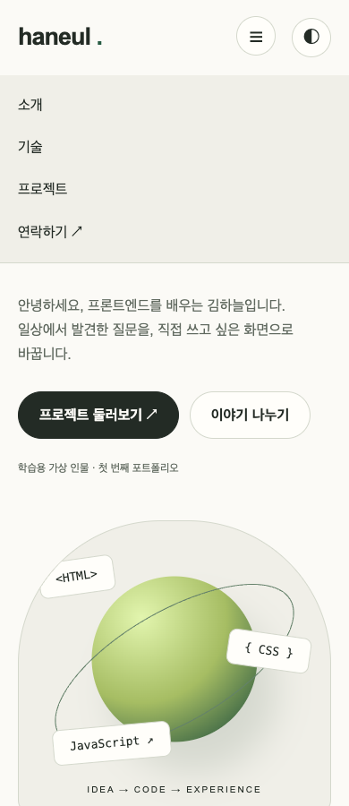
12390px 너비의 실제 메뉴 열린 화면.
클릭을 감지해 메뉴의 active 클래스를 토글합니다. aria-expanded도 동시에 바꿔 열림 상태를 전달합니다.
각 section으로 이동한 뒤 메뉴를 닫습니다. Escape 키로도 닫을 수 있습니다.
60px부터 헤더 배경이 바뀝니다. 300px부터 오른쪽 아래에 맨 위 버튼이 나타납니다.
css/style.css의 @media(min-width:768px)에서 메뉴를 가로 배치하고 햄버거를 숨깁니다.
$('#menu-toggle').addEventListener('click', () => {
const opened = $('#nav-links').classList.toggle('active');
$('#menu-toggle').setAttribute('aria-expanded', String(opened));
// 버튼의 접근 가능한 이름도 함께 변경
});classList.toggle의 반환값은 클래스가 적용되었는지 알려줍니다. 메뉴에서는 그 결과를 열림 상태로 사용합니다. 스크롤 효과는 onScroll 함수, 등장 효과는 IntersectionObserver가 담당합니다.
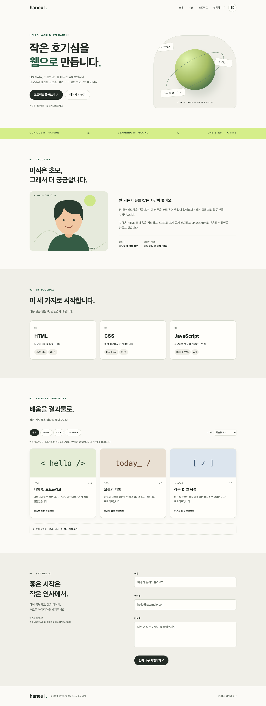
라이트 모드 전체 화면.
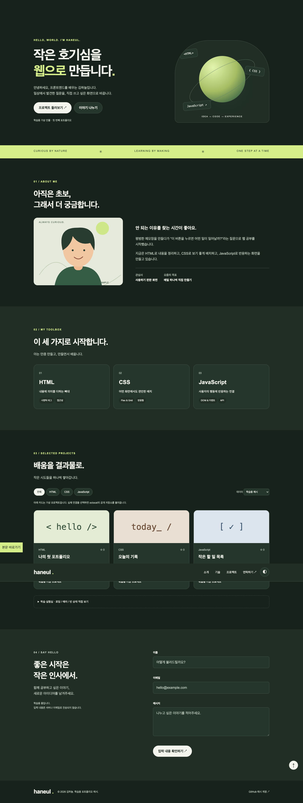
다크 모드 전체 화면.
state.theme = state.theme === 'light' ? 'dark' : 'light';
renderTheme();
try {
localStorage.setItem('portfolio-theme', state.theme);
} catch { /* 현재 페이지에서는 유지 */ }| 개념 / 항목 | 쉽게 이해하기 · 실제 적용 |
|---|---|
| 클릭 감지 | main.js의 theme-toggle 이벤트 리스너. 실행의 시작점입니다. |
| 상태 변경 | state.theme은 light 또는 dark입니다. 색 자체가 아니라 현재 선택을 저장합니다. |
| 화면 반영 | renderTheme이 html의 data-theme을 바꿉니다. CSS의 [data-theme="dark"] 변수들이 적용됩니다. |
| 다음 방문에 복원 | 시작할 때 localStorage.getItem으로 읽습니다. 저장 실패도 try/catch로 처리하여 페이지가 멈추지 않게 합니다. |
다크 모드 → 새로고침 → 유지 여부 확인. 이어서 CSS의 다크 모드 --bg 값을 바꿔보세요. “저장된 것은 색 코드가 아니라 테마 이름”임을 설명해 보세요.
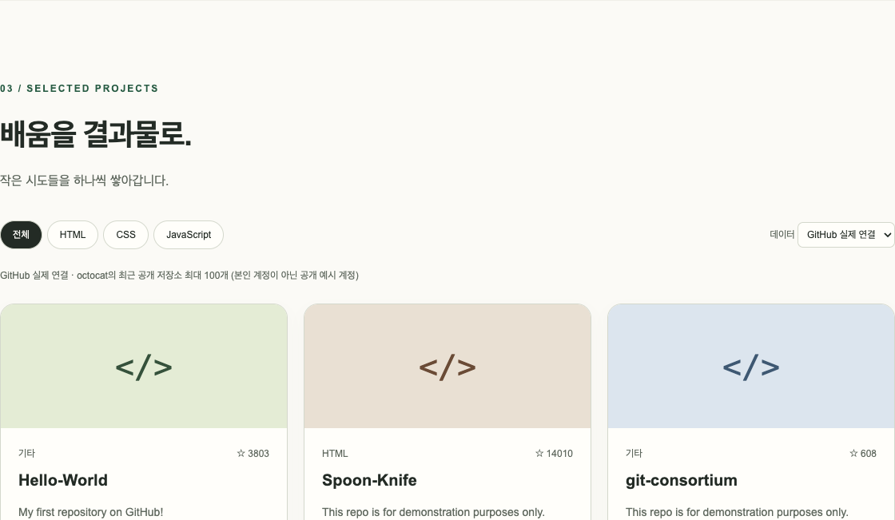
12실제 GitHub API 연결 결과. 촬영 당시 octocat 공개 저장소 8개를 받았습니다. 본인 프로젝트가 아닙니다.
① 데이터 선택에서 실제 연결을 고르면 loadProjects가 실행됩니다. ② 응답 배열을 state.repos에 저장하고 renderProjects가 카드를 생성합니다.
const response = await fetch(
`https://api.github.com/users/${encodeURIComponent(GITHUB_USERNAME)}/repos?sort=updated&per_page=100`,
{ signal: controller.signal, headers: { Accept: 'application/vnd.github+json' } }
);
// HTTP 성공 여부를 검사한 후
const data = await response.json();코드 위치: js/main.js의 loadProjects, renderProjects, escapeHTML. map의 결과를 join('')으로 합쳐 innerHTML에 넣습니다. 외부 문자열은 이스케이프하고 링크는 GitHub HTTPS 주소인지 검사합니다.
기본 카드 3개는 학습용 가상 데이터입니다. 실제 연결은 인터넷이 필요하며 최근 공개 저장소 최대 100개만 요청합니다. 언어 필터는 서버 재요청 없이 받아온 배열을 filter로 걸러냅니다.
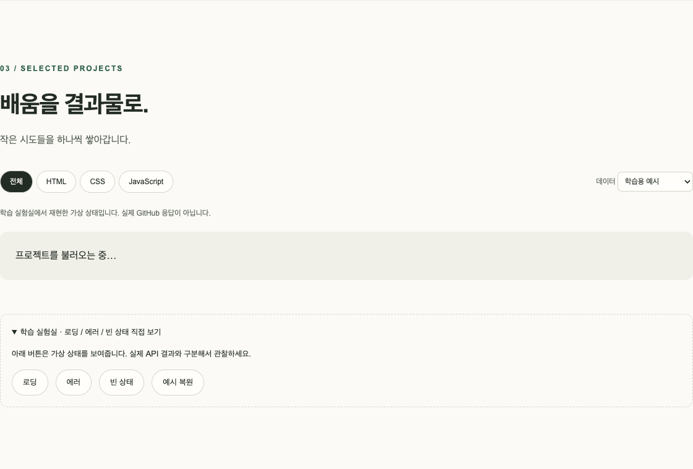
1① 로딩 상태를 학습 실험실에서 재현한 실제 화면입니다.
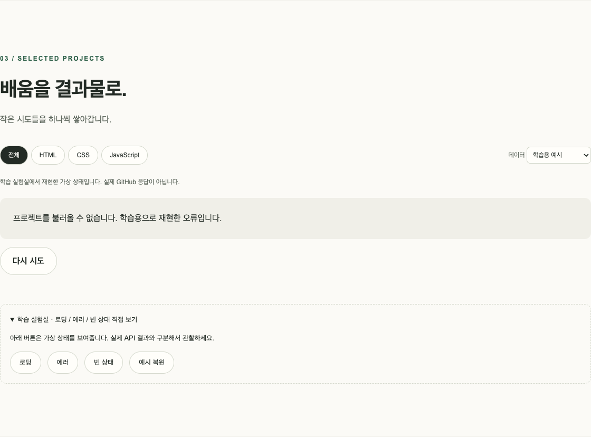
② 오류 상태: 안내와 재시도 버튼.
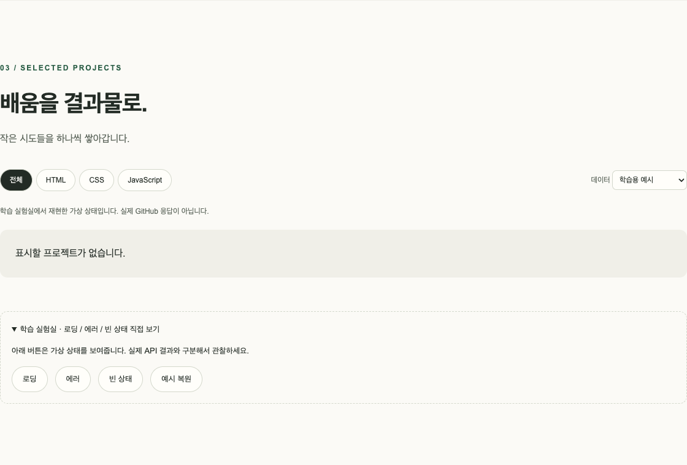
③ 빈 상태: 정상 결과가 0개일 때.
| 개념 / 항목 | 쉽게 이해하기 · 실제 적용 |
|---|---|
| ① loading | 요청을 시작할 때 즉시 표시합니다. 카드는 비우고 aria-busy를 true로 설정합니다. |
| ② error | 네트워크 실패, HTTP 실패, 12초 초과 등을 안내합니다. 다시 시도는 loadProjects를 호출합니다. |
| ③ empty | 데이터가 없거나 선택한 언어에 맞는 항목이 없습니다. 오류와 다른 정상적인 결과입니다. |
위 캡처는 학습용 버튼으로 만든 가상 상태입니다. 별도로 실제 fetch 경로에 403·빈 배열·성공 응답을 테스트 도구로 주입해 오류 처리도 검사했습니다. 실제 인터넷 연결에서는 성공 응답을 확인했습니다.
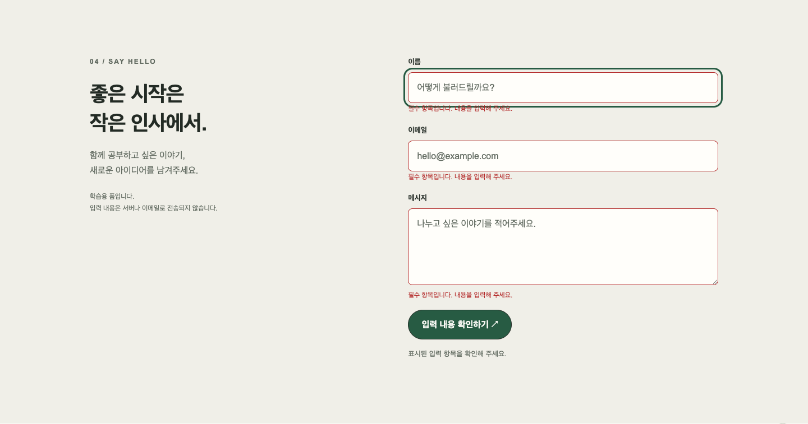
123빈 폼을 확인했을 때 나타나는 실제 오류 화면.
| 개념 / 항목 | 쉽게 이해하기 · 실제 적용 |
|---|---|
| ① 이름 · ③ 메시지 | trim으로 앞뒤 공백을 제거한 값이 비어 있는지 검사합니다. 공백만 넣어도 필수값 검사를 통과하지 않습니다. |
| ② 이메일 | input type="email"의 validity.typeMismatch를 사용합니다. 형식 검사이며 실제 주소의 존재나 수신 가능성을 보장하지 않습니다. |
| 오류와 초점 | textContent로 각 오류를 표시하고 aria-invalid를 갱신합니다. 제출 실패 시 첫 오류 입력으로 초점을 옮깁니다. |
event.preventDefault();
const results = fields.map(validate);
if (results.every(Boolean)) {
// 입력 확인 성공 안내: 실제 전송은 하지 않음
}실제 구현 위치: js/main.js의 validate와 contact-form submit 이벤트. novalidate는 브라우저의 기본 팝업을 끄고, 직접 만든 오류 문구를 보여주기 위해 사용합니다.
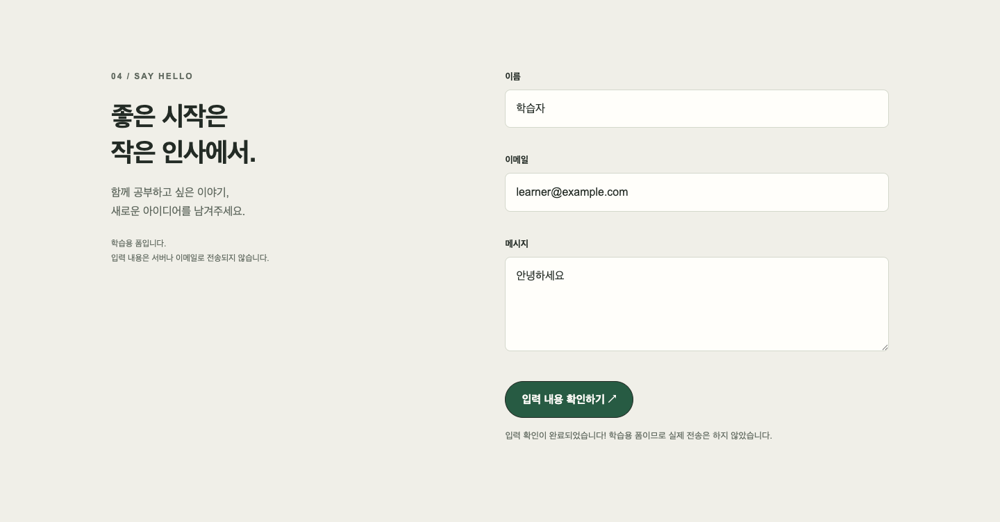
1유효한 값을 입력하면 확인 완료 안내가 나타납니다. 서버나 이메일로 전송하지 않습니다.
| 개념 / 항목 | 쉽게 이해하기 · 실제 적용 |
|---|---|
| 내가 해볼 순서 | ① 모바일 메뉴 열기/닫기 → ② 테마 바꾸고 새로고침 → ③ 언어 필터 → ④ 로딩/오류/빈 상태 → ⑤ 잘못된 이메일 고치기. |
| 예상 결과 | 메뉴 표시가 바뀌고, 테마는 유지되고, CSS 카드 1개가 보이고, 각 API 상태가 구분되고, 이메일 오류가 사라져야 합니다. |
| 설명 연습 | “어떤 이벤트가 시작점인가? 어떤 값이 달라졌나? 어느 함수가 어느 DOM을 바꾸나?”를 기능마다 말해보세요. |
360/390/768/1024/1440px에서 가로 넘침 없음. 모바일 메뉴, 테마 저장, 폼 검사, 필터, 스크롤 버튼, HTTP 403·빈 결과·성공·외부 문자열 처리 통과. 실제 API 카드 8개. JavaScript 실행 오류 0개.
전체 접근성 인증이나 모든 브라우저 검증을 의미하지는 않습니다. GitHub Pages 공개 환경 검증은 아직 하지 않았습니다.
캡처 원본: deliverables/screenshots/ · 검증 기록: deliverables/verification.json · 테스트 스크립트: scripts/capture.py. 코드 예시는 이해를 위해 일부를 발췌했으며 원본 파일을 함께 확인하세요.